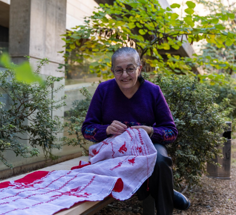
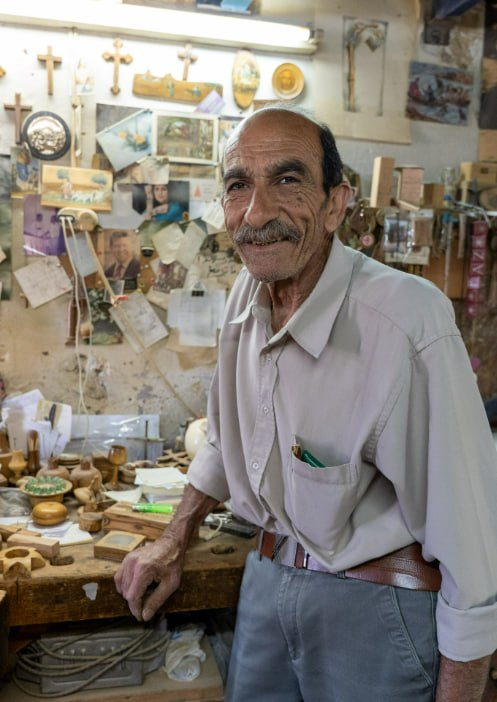

مها أبو دحو
حرفية تطريز فلسطيني - رام الله

مها أبو دحو، حرفية تطريز من رام الله، بدأت رحلتها مع هذه الحرفة وهي في السابعة من عمرها، عندما تعلمت أولى غرز التطريز على يد والدتها. في البداية كان التطريز وسيلة لمساعدة العائلة، لكنه سرعان ما تحول إلى شغف رافقها طوال حياتها.
ومع مرور السنوات، أدركت مها أن التطريز الفلسطيني التقليدي يواجه خطر الاندثار، فكرّست جهودها للحفاظ عليه من خلال ممارسة الحرفة بأساليبها الأصيلة، مع تطوير تصاميم معاصرة تجعل هذا التراث أكثر قرباً من الأجيال الجديدة.
تمثل أعمالها نموذجاً يجمع بين الأصالة والتجديد، حيث تحافظ على الرموز والأنماط التراثية الفلسطينية، وتعيد تقديمها بروح حديثة تعبر عن الهوية والثقافة الفلسطينية بأسلوب إبداعي ومتجدد.

كل غرزة تحمل حكاية، وكل قطعة تحفظ جزءًا من الذاكرة الفلسطينية.


نبيل بابون
حرفي نحت خشب الزيتون - بيت لحم
يُعد نبيل بابون واحداً من أبرز الحرفيين الفلسطينيين في نحت خشب الزيتون، حيث أمضى أكثر من خمسة عقود في تشكيل المنحوتات والمجسمات الخشبية التي تعكس روح التراث الفلسطيني. وُلد في مدينة بيت لحم، وما زال يمارس هذه الحرفة بإتقان في ورشته منذ أكثر من خمسين عاماً. يؤمن نبيل بأن لكل قطعة خشب قصة خاصة بها، ويقول:
خشب الزيتون يحمل ذاكرته بنفسه، نحضّر الخشب ونتركه يجف لمدة أربع سنوات قبل البدء باستخدامه.
تعتمد أعماله على الصبر والدقة واحترام المادة الخام، مما يجعل منحوتاته تحمل قيمة فنية وتراثية كبيرة. ومن خلال حرفته، يواصل نقل خبراته إلى الأجيال الجديدة، محافظاً على واحدة من أقدم الحرف الفلسطينية وأكثرها ارتباطاً بالأرض.
كل قطعة تحمل حكاية، وكل تفصيل يحفظ جزءًا من الذاكرة الفلسطينية.